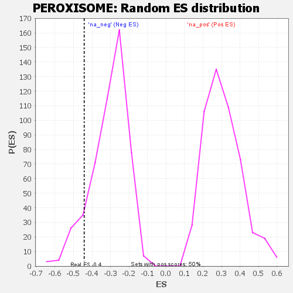

| | | Dataset | GSEA RNK clr Maaslin2 MucosalvsLuminal KO - Colon.rnk |
| Phenotype | NoPhenotypeAvailable |
| Upregulated in class | na_neg |
| GeneSet | PEROXISOME |
| Enrichment Score (ES) | -0.4421571 |
| Normalized Enrichment Score (NES) | -1.4341412 |
| Nominal p-value | 0.105788425 |
| FDR q-value | 0.18893895 |
| FWER p-Value | 0.994 |
Table: GSEA Results Summary
 Fig 1: Enrichment plot: PEROXISOME
Fig 1: Enrichment plot: PEROXISOME
Profile of the Running ES Score & Positions of GeneSet Members on the Rank Ordered List

Fig 2: PEROXISOME: Random ES distribution
Gene set null distribution of ES for PEROXISOME